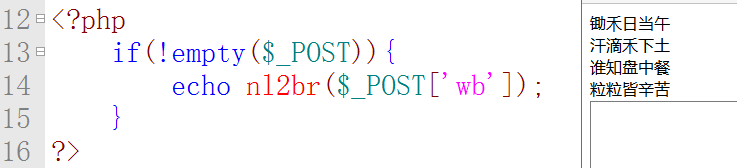

Pday3-PHP基础3（常量、数据类型）
一、PHP常量～～1、常量是值永远不变的量。如：身份证号码、DNA、圆周率等。
常量不能修改（只能声明一次，无法重新赋值），不能删除。
2、命名规则---常量的命名规则与变量一样，但不能加”$”符号；
常量尽量全大写，与变量区分开来；如：DB_HOST、TITLE、CONTENT
3、①常量定义define()语法：bool define(string $name,mixed $value[,bool $case_insensitive=false]);例define('PI',3.14,true);
//定义引号不能少 //开头处bool值是检验该常量名之前是否被定义过，之前没定义设置常量成功则返回true。
//$name常量名称,$value常量值,$case_insensitive,是否大小写敏感，false(区分大小写)，true不区分大小写，默认false
例：define("ID","10735787"); echo ID;//注意输出不能加""引号。echo constant("ID")可以解析特殊字符常量
②常量判断defined(),例defined("ID"）//结果布尔值，注意是defined，不要忘写d
4、PHP预定义常量
PHP_VERSION：PHP版本号，PHP_OS：PHP操作系统
PHP_INT_MAX：PHP支持的最大整数
TRUE：既是常量，也是关键字；FALSE：既是常量，也是关键字。
获取系统中所有常量get_defined_constants()，获取所有已经被定义的常量，包括系统预定义的和我们自己定义的常量。
5、PHP的系统常量，大约有1500多个，可以通过get_defined_constants()函数来获取。
描述：返回所有常量的关联数组，键是常量名，值是常量值
语法：array get_defined_constants ([ bool $categorize = false ] )//false返回一维数组，true返回分组为二维数组
参数：bool $categorize参数，是否显示二维数组，是否常量要分组。例$arr=get_defined_constants(true);print_r($arr);
echo "<pre>";
var_dump(get_defined_constants());
echo "</pre>";
6、PHP魔术常量：在程序运行过程中，值可以随环境的变化而改变的常量。
1__LINE__：获取当前行号；2__FILE__：获取当前文件的绝对路径；3__DIR__：获取当前文件的目录；
4__FUNCTION__：获取当前函数名；5__CLASS__：获取当前类名；6__METHOD__：获取当前方法名
提示：get_defined_constants()中没有魔术常量。
二、PHP数据类型
标量(基本)数据类型：字符串型string、整型int、浮点型float、布尔型boolean
复合数据类型：数组array、对象object
特殊数据类型：资源resource、NULL
0、判断数据类型
var_dump()打印变量的类型和值。
is_bool(),is_int(),isfloat(),is_numeric(),is_array(),is_string(),is_null(),is_resource()
注意：1判断布尔型有点特殊，例：$n=true;is_bool($n)---// bool(true) 别写错 2如果一个字符串是纯数字$n="123"组成，则is_numeric()是true。
form提交的数据都是字符串，使用时需先处理否则无法使用以上方法。
1.整型(占4字节32位，32位中第一位是符号位，表正负,后面31位是用来存储数值大小的，最大值011111111111111)31个1，等于2^31-1。
整型表示方法：十进$a=90,八进制$b=077，十六进制$c=0x89FA
最大整数（PHP_INT_MAX）范围：-2^31(-2147483648)至2^31-1(2147483647)//整型最小值的绝对值比正整数最大值多1，多的1位是负0
如果超出整型最大值，这个数会变成浮点型。如PHP_INT_MAX+1
2.浮点型：就是小数，范围：1.8E-308 ~ 1.8E+308，如果超出范围会变成INF无穷大。echo 1.8E308;//结果INF
PHP表示的是双精度浮点，小数点后14位，如果小数点超出14位，会四舍五入。如：1.1234567891235；如果整型超出14位有效数字，会转换为科学计数法。如：1.2345678912346E+200
E是以10为底。1.8E5：是一种科学计数方式。1.8*10^5 = 180000
echo number_format(19.31*100,20); //格式化数字结果1,930.99999999999977262632
浮点型的比较是不准确的，浮点数之间不能进行比较在条件判断中尽量不要使用浮点型。例：1-0.7==0.3结果是false，因为浮点型转换为2进制结果是近似的。
3.字符串型
string 中的字符可以通过一个从 0 开始的下标，用类似 array 结构中的方括号包含对应的数字来访问和修改，
比如 $str[42]，也可用花括号访问，比如 $str{42}。
PHP 的字符串在内部是字节组成的数组。因此用花括号访问或修改字符串对多字节字符集很不安全。
字符串定义的3种方式：
①用单引号引起来的一串字符，单引号使用'和\需要转义为\'和\\，另外单引号内出现变量会原样输出,php不会解析它。
②用双引号引起来的一串字符，双引号内的转义字符，基本都可以使用。如：\\、\"、\n、\$、\t、\r，转化显示在源码中。
③heredoc标识符,语法:2.将一个字符串放在<<<heredoc和heredoc;之间，两句一头一尾不能乱，
$str=<<<heredoc
//1. 名称随便起，但是前后必须一致,不一定是heredoc，也可以是abc等任意名称,后面不能有东西
巴拉巴拉小魔星 //4.长字符串中可以放置HTML、CSS、JS、PHP的变量，但不能进行计算
heredoc;
//heredoc;3.必须是单独一行顶格排，并且;后面也不能加任何内容，包括空格！
④nowdoc定界符，将一个字符串放在<<<'nowdoc'和nowdoc;之间一定是单引号
heredoc和nowdoc本质的区别是heredoc内部可以解析php中的变量，相当于双引号的功能，但是nowdoc内部只会将php中的变量当成普通字符去输出，相当于单引号的功能。
echo (int) ((0.1+0.7) * 10); // 结果为7-决不要将未知的分数强制转换为 integer，这样有时会导致不可预料的结果。
$name='100';
echo $name;//结果100。
echo '$name';//结果$name-----单引号内输出内容会将所有的内容当成普通字符进行输出，变量名不会被解析。
echo '<br>';
echo "$name";//结果100------但是双引号输出内容前会先对双引号中的内容进行解析，然后将解析后的结果输出。
在双引号内，如果一个变量后跟一个非空字符，会当成一个变量来处理，其实并没有这个变量。
此时变量最好加{}，否则出错。如echo "{$name}abc的基本信息"
⑤nl2br作用：将\n转换为br

⑥htmlspecialcahrs：将所有特殊字符转换为普通字符输出，出于安全考虑都会加上这句

4、布尔型
布尔型只有两个值true、false。
哪些值转成布尔型认为是FALSE---0、""、"0"、false、NULL、array()、空对象，转成布尔型都认为是FALSE。
5、空型：没有类型，不区分大小写（null,NULL）
如果一个变量不存在，则认为空型，空型只有一个值NULL。
哪些情况认为空？1不存在的变量（未定义）；2、Unset()某一个变量；3、NULL,手动赋值为null，作用释放内存空间。
6、资源型
PHP的功能很少，它需要加载第三方的插件来实现其它功能。那么，第三方插件，对于PHP来说，就是它的资源。如：MySQL、GD2、FileSystem等。
资源就是到第三方数据的一个引用，也称为”引用传值”。
例：$link=mysql_connect($db_host,$db_user,$db_pwd);//PHP连接到数据库mysql_connect(IP地址:端口号,用户名,密码);
注意补充：
NAN 代表着未定义或不可表述的值。不应拿 NAN 去和其它值进行比较，否则FALSE，包括其自身，应该用 is_nan() 来检查。
双引号内可以解析单引号内的变量，但是在关联数组中，双引号并不能解析单引号内的索引。
解决办法是使用复杂语法{}或者去掉索引的单引号。
<?php
$str = 'abc';
echo "this is a '$str'".'<br/>';
$fruit=array('a'=>'apple','b'=>'banana');
echo "This is a $fruit['a']"; //语法错误T_ENCAPSED_AND_WHITESPACE
//解决办法
echo "This is a $fruit[a]";
echo "This is a {$fruit['a']}";
echo "This is a ${fruit['a']}";
?>